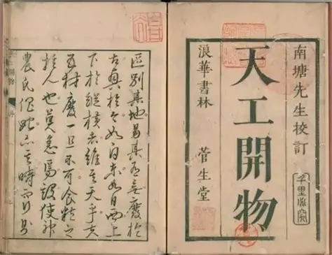

明崇祯十年（1637年），宋应星完成这部中国古代第一部关于农业和手工业生产技术的综合性百科全书。它全面系统记载了古代农作物种植、纺织、制盐、造纸、冶铸、造船、陶瓷、兵器制造等生产技艺，首次将生产经验升华为科学体系，被誉为"中国17世纪的工艺百科全书"，是世界科技史上珍贵的古代工艺典籍。

六大维度展现中国17世纪工艺百科全书的地位
《天工开物》建立了中国古代从农业生产到工业制造的完整技术理论框架
核心宗旨："贵五谷而贱金玉"——以民生为本，重视粮食与衣物生产
核心法则：顺应天时、因地制宜、精耕细作、技艺改良
核心内容：系统记载粮食种植、养蚕、缫丝、纺织、染色、制盐、制糖等民生技艺
| 分类 | 具体内容 |
|---|---|
| 乃粒（粮食） | 稻、麦、黍、稷种植技术，水利灌溉、耕具改良、耕作方法 |
| 乃服（纺织） | 养蚕、缫丝、棉纺、麻纺、丝织、印染全套工艺与工具 |
| 甘嗜（制糖） | 甘蔗种植、红糖、白糖、冰糖制作工艺与设备 |
冶金铸造：详细记载生铁、熟铁、钢铁、铜、锌冶炼技术，领先世界同期水平
陶瓷造纸：完整记录砖瓦、陶瓷烧制、竹纸、皮纸制造全流程工艺
舟车制造：系统描述船舶、车辆结构、制作工艺、航行与行驶技术
| 构件类型 | 技术成就 |
|---|---|
| 冶铸 | 失蜡法、泥型铸造、大型铸件工艺，世界最早记载锌（倭铅）冶炼技术 |
| 陶瓷 | 从制坯、施釉到窑烧完整流程，涵盖民用、官用陶瓷工艺 |
| 造纸 | 斩竹漂塘、煮楻足火、荡料入帘、覆帘压纸、透火焙干全套技艺 |
《天工开物》建立了从原料到成品的全流程生产体系，形成可复制、可推广的科学方法论：
1. 原料采集 → 加工处理 → 初步成型
2. 高温炼制 / 机械加工 → 精细修整 → 品质检验
3. 成品使用 → 技艺总结 → 标准传承
工艺特点：图文并茂、数据精准、流程清晰、可操作性强，是古代工匠的实用技术指南。
历史地位：中国古代科技史里程碑，世界第一部综合性工农业技术百科全书。
流传情况：国内清代一度失传，1920年代从日本、法国传回重刊，重归中国科技体系。
| 对后世影响 | 具体体现 |
|---|---|
| 直接指导 | 明清民间手工业、农业生产技术标准化、规范化 |
| 世界传播 | 被译为日、法、英、德等文字，影响世界近代科技发展 |
| 现代价值 | 非遗技艺复原、传统工艺研究、古代科技史研究的核心依据 |
从不同视角理解《天工开物》的独特科技价值
| 维度 | 《营造法式》（宋） | 《天工开物》（明） | 本质区别 |
|---|---|---|---|
| 性质 | 官式建筑技术规范 | 工农业全门类科技百科 | 专业建筑 vs 全域科技 |
| 核心 | 木构建筑标准化 | 生产技艺科学化 | 营造法度 vs 工艺原理 |
| 目标 | 规范建筑等级与工料 | 记录民生与生产技术 | 工程管理 vs 科学记录 |
| 范围 | 仅限建筑营造领域 | 覆盖农业、工业全领域 | 单一行业 vs 全产业体系 |
| 方面 | 《天工开物》中国科技 | 西方近代科技 | 文化根源 |
|---|---|---|---|
| 研究对象 | 实用民生、工农业技艺 | 数理逻辑、实验科学 | 实用主义 vs 理性主义 |
| 记载方式 | 经验总结、图文对照 | 公式推导、实验证明 | 实践经验 vs 理论体系 |
| 时代价值 | 17世纪世界工艺巅峰 | 近代科学革命开端 | 古代科技高峰 vs 现代科学起点 |
| 传承特点 | 技艺传承、民生为本 | 学术传播、知识革新 | 工匠传承 vs 学院研究 |
《天工开物》不仅是一部古代工艺技术手册，更是一部承载中华文明实用智慧的科技经典。它以"贵五谷而贱金玉"的民生理念，将农业与手工业技艺系统整理，让中国古代千万工匠的实践智慧升华为科学体系。从农田耕作到冶金制造，从纺织造纸到舟车建造，它完整展现了17世纪中国领先世界的科技水平。这部典籍不仅是中国古代科技的"活档案"，更是世界文明史上珍贵的科技遗产，至今仍在传统工艺复原、非遗传承、文化自信建设中发挥着不可替代的价值。